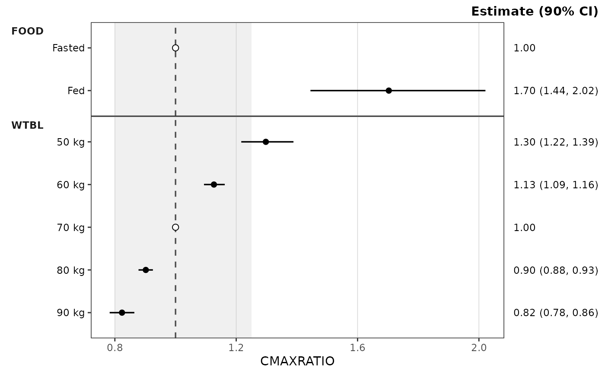
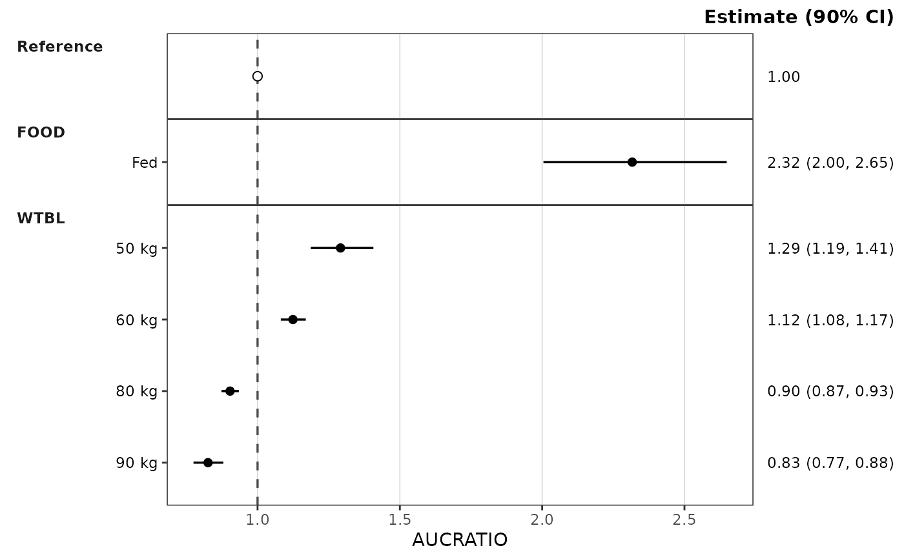
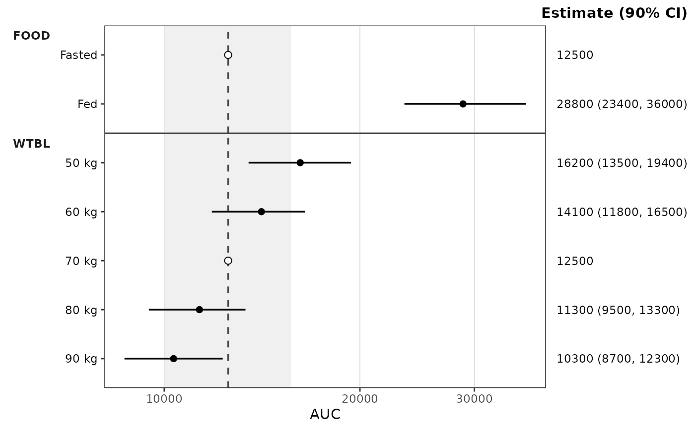

Dual-mode wrapper that delegates to df_forest() for aggregation and
plot_build_forest() for rendering. Accepts either:
raw replicate-draws data plus column-name arguments — the common one-shot mode; or
a precomputed
forest_statsobject returned bydf_forest()— skip the aggregation and replot with differentstyle/ref/ref_band/ref_band_type/ref_layoutsettings.
On the precomputed path, pipeline arguments (metric_name_var,
metric_value_var, cov_name_var, cov_level_var, ci,
sigdigits, cov_name_ref, cov_level_ref) cannot be honored because
the aggregation does not run again — passing any of them aborts with a
message pointing the caller at df_forest(). Only style, ref,
ref_band, ref_band_type, ref_layout, show_rep, and metric are
accepted on both paths.
Usage
plot_forest(
data,
metric = NULL,
metric_name_var = "metric",
metric_value_var = "value",
cov_name_var = "cov_name",
cov_level_var = "cov_level",
ci = 0.9,
sigdigits = 3,
cov_name_ref = "Reference",
cov_level_ref = NULL,
ref = "reference",
ref_band = NULL,
ref_band_type = c("multiplicative", "additive", "absolute"),
ref_layout = NULL,
show_rep = FALSE,
style = NULL
)Arguments
- data
Either raw observation/draws data (data.frame) or a
forest_statsobject returned bydf_forest().- metric
Character scalar identifying which value of
metric_name_varto render.plot_forest()renders one metric per call (no metric facet); the covariate name is the only facet dimension. IfNULL(default) andstats$statscontains exactly one unique value ofmetric_name_var, that value is used. IfNULLand multiple metrics are present, aborts and asks the caller to pick one.- metric_name_var
Column in
datacontaining metric names. Accepts bare names or strings. Default ismetric.- metric_value_var
Column in
datacontaining replicate draws of the test/reference comparison statistic. Accepts bare names or strings. Defaultvalue.- cov_name_var
Column in
datacontaining covariate variable names. (e.g.,WTBL,FOOD, etc). Accepts bare names or strings. Default iscov_name.- cov_level_var
Column in
datacontaining covariate levels (e.g.,70 kg). Accepts bare names or strings. Default iscov_level.- ci
Numeric scalar in
(0, 1)specifying the central interval width (e.g.,0.9for 90% CI).- sigdigits
Number of significant digits used to format the label columns. Digits are counted on the median estimate of each metric, which fixes one count of decimal places for every value of that metric (
"1.00","0.95","2.32"for a ratio;"12500","9500"for an exposure near 12500). Trailing zeros are kept. Default3.- cov_name_ref
The value of
cov_name_varthat marks the reference rows, drawn in the reference panel at the top. Default"Reference", as indf_forest_preprocess()output;NULLfor no reference row.- cov_level_ref
Optional named vector of per-covariate reference labels, e.g.
c(FOOD = "Fasted", WTBL = "70 kg"). When given, the reference row is also drawn inside each named covariate panel under that label, and this becomes the defaultref_layout. Unnamed covariates show no reference row. Requirescov_name_ref. DefaultNULL(reference panel only).- ref
The x-intercept of the vertical reference line: a numeric scalar,
NULLto suppress the line, or"reference"(default) to use the estimate of the metric's reference row (the row flaggedis_ref; exactly1for a ratio metric, the reference exposure for a raw metric). With"reference"and no reference row in the plotted metric, a warning is issued and no line is drawn.- ref_band
Length-2 increasing numeric vector (
ref_band[1] < ref_band[2]) giving the equivalence band, read according toref_band_type. DefaultNULL(no band).- ref_band_type
How
ref_bandis placed around the resolvedref:"multiplicative"(default) drawsref * ref_band, soc(0.8, 1.25)gives the bioequivalence bounds on a ratio or a raw exposure scale;"additive"drawsref + ref_band, soc(-10, 10)brackets a reference change of zero for a difference metric such as percent change from baseline;"absolute"drawsref_bandas given. The first two require a resolvedref; multiplicative limits must be positive.- ref_layout
"distributed"draws the reference row inside each covariate panel named incov_level_ref;"consolidated"draws it once in the reference panel at the top. DefaultNULL: distributed ifdf_forest()was givencov_level_reffor a covariate ofmetric, else consolidated.- show_rep
Logical. Display the number of replicates (the
ncolumn of the plotted rows) as a plot caption. Warns, and shows the range, when rows of the metric have different counts. DefaultFALSE. Acaptionset in the style is drawn instead, whatever this value.- style
A
ggstylekit::style_spec(); defaultstyle_forest(), which documents the roles, per-covariate coloring, and theme elements. Alternatives:style_forest_pmforest(),style_forest_coveffectsplot(),style_forest_pmxforest(),style_forest_pumas().
Examples
# Raw-data path: one metric per call
plot_forest(
dplyr::filter(data_sad_pkforest, metric == "AUCRATIO"),
cov_level_ref = attr(data_sad_pkforest, "cov_level_ref")
)
 # Precomputed path: compute once, render different metrics from the same stats
stats <- df_forest(
data_sad_pkforest,
cov_level_ref = attr(data_sad_pkforest, "cov_level_ref")
)
plot_forest(stats, metric = "AUCRATIO")
# Precomputed path: compute once, render different metrics from the same stats
stats <- df_forest(
data_sad_pkforest,
cov_level_ref = attr(data_sad_pkforest, "cov_level_ref")
)
plot_forest(stats, metric = "AUCRATIO")
 plot_forest(stats, metric = "CMAXRATIO", ref_band = c(0.8, 1.25))
plot_forest(stats, metric = "CMAXRATIO", ref_band = c(0.8, 1.25))

# Same stats, reference panel instead of a reference row in each covariate panel
plot_forest(stats, metric = "AUCRATIO", ref_layout = "consolidated")

# Raw exposure from the same stats: reference line at the reference
# exposure, band at 0.8 to 1.25 times it (log x-axis keeps it symmetric)
plot_forest(stats, metric = "AUC", ref_band = c(0.8, 1.25),
style = style_forest(logx = TRUE))

# Per-covariate coloring via the style's `colors` map
plot_forest(
stats, metric = "AUCRATIO",
style = style_forest(colors = c(FOOD = "darkgreen", WTBL = "darkblue"))
)